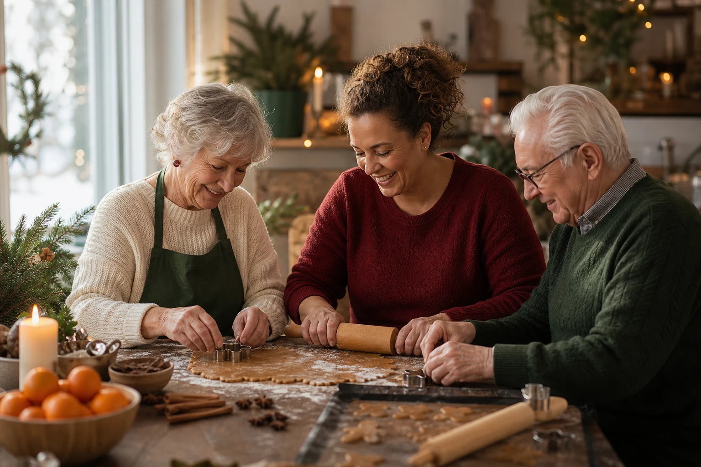

Frivillig før jul
Bak julen inn sammen
Vi søker deg som vil bake, prate og skape en varm førjulsstund sammen med beboere på Vinderenhjemmet. Velg én eller flere dager i desember.
Et par timer per gang · Noe bakeerfaring er ønskelig

Julen skjer mellom mennesker
Litt mel på hendene. Mye varme rundt bordet.
Noe av det fineste med julen skjer rundt et bakebord. Duften fra ovnen, en deig som skal kjevles og små samtaler mens hendene arbeider. I desember inviterer Vinderenhjemmet og Vestre Aker Frivilligsentral til fem hyggelige bakeøkter sammen med beboerne.
Som frivillig blir du med i et par timer. Du hjelper til med bakingen, gjør det enkelt for flere å delta og bidrar til den gode stemningen rundt bordet. Det handler like mye om å være sammen som om det som kommer ut av ovnen.
Du kommer med litt bakeerfaring. Sammen lager vi førjulsglede.
Rundt bakebordet
Dette gjør vi sammen
Noe erfaring med baking er ønskelig. Du trenger ikke være konditor - det viktigste er at du trives ved bakebordet og møter andre med varme og tålmodighet.
-
Baker sammen
Vi hjelper hverandre med deigen og de praktiske oppgavene rundt bordet.
-
Gjør plass rundt bordet
Vi gjør det enkelt for alle som ønsker det å delta i sitt eget tempo.
-
Deler en god stund
Vi prater, lytter og lar de små øyeblikkene få plass mens baksten tar form.
-
Rydder sammen til slutt
Vi avslutter bakeøkten med enkel rydding og en god følelse rundt bordet.
Velg dagen som passer
Fem muligheter til å bake julen inn
Hver bakeøkt varer et par timer. Du kan melde deg på én dag eller flere.
Oppmøte
Vinderenhjemmet
Forskningsveien 5, 0373 OsloPåmelding
Hvilke dager vil du bake med oss?
Velg én eller flere dager og fyll inn kontaktinformasjonen din. Vi tar kontakt og bekrefter det praktiske før bakeøkten.
Har du spørsmål? Ring Espen på 481 37 180 eller send e-post til espen@vestreaker.frivilligsentral.no.
Et samarbeid i nærmiljøet
Gode møter rundt samme bord
Vestre Aker Frivilligsentral og Vinderenhjemmet samarbeider for å skape gode møter og aktiviteter sammen med beboerne. Julebaksten er én av stundene der frivillighet, hverdagsglede og fellesskap får plass.